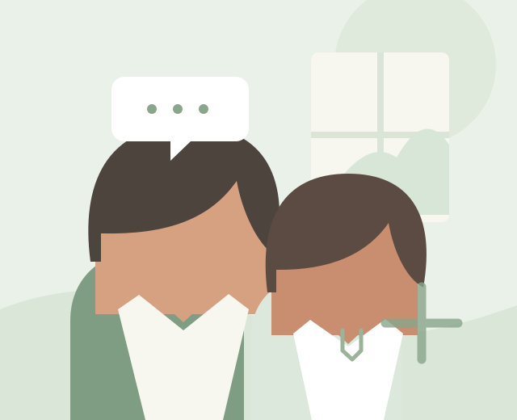
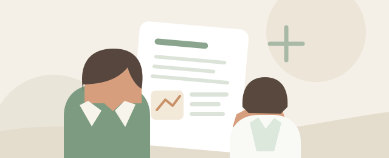

We listen first
Your experiences and priorities help shape the conversation from the very beginning.
A more thoughtful kind of care
Your health is personal. Your care should be, too. We make space to listen, explain your options, and help you feel confident about what comes next.
Better care begins when you feel comfortable being heard.
Healthcare can feel like a lot. We’re here to make the next step feel a little clearer.
See how we careA little about us
At GenieMD, we believe feeling understood is an important part of feeling cared for.
We’re building a welcoming place where people can talk openly about their health, get clear information, and make decisions with a care team—not on their own. Every visit begins with your perspective and leaves room for the questions that matter to you.
There isn’t one right way to navigate health. Our role is to help you explore the possibilities, understand the next steps, and feel supported along the way.
Our approach to careYour experiences and priorities help shape the conversation from the very beginning.
We explain information in everyday language and give you time to consider your options.
Care is a partnership. We’ll work with you on a plan that fits your needs and goals.

CARE IS A CONVERSATIONCare at Aster
Your life, your questions, your health goals—these all belong in the room.
We take time to learn what matters to you. Together, we can talk through your concerns, look at the information available, and decide on practical next steps. You remain at the center of every conversation.
Explore our servicesWays we can help
Every person comes with a different story. Explore the kinds of support we can discuss together, and reach out if you’re unsure where to begin.
A dedicated space to share what’s on your mind, review your health concerns, and talk through possible next steps.

Clear explanations to help you make sense of health information and prepare questions for your care team.
Work together on a thoughtful plan, understand available choices, and decide what feels right for you.
Keep the conversation going as your needs change, with room to revisit questions and goals over time.
Services and availability depend on your location and individual needs. Contact us to learn what may be appropriate for you.
What to expect
Getting started shouldn’t feel complicated. Here’s a simple picture of how a first conversation can unfold.
Ready when you areStart with the question or concern that brought you here. You don’t need to have everything figured out before you reach out.
We’ll ask about your goals and what matters to you, then make time to hear your questions and understand your perspective.
We’ll talk through the information and choices available, explain what we know, and be honest about what we don’t.
You’ll have a chance to reflect and decide what feels right. Your plan should make sense for you—not just on paper.
When people feel heard, they can take a more active part in their care.
OUR PROMISE TO YOU
Good to know
Have a question that isn’t here? We’d be glad to hear from you.
Ask us directlyBring whatever feels helpful: a list of questions, relevant health information, and notes about what you’d like to discuss. If you don’t have these ready, that’s okay too.
No. It’s completely fine to start with a question or a general concern. We can learn more about what you’re looking for and discuss appropriate next steps.
You can let us know if you’d like a support person involved in a conversation. We’ll talk with you about your preferences and respect your privacy.
Availability can depend on where you live and your individual circumstances. Contact us and we can explain what options may be available in your area.
No. If you may be experiencing a medical emergency, contact your local emergency services or go to the nearest emergency department now.
We’re listening
No pressure to have the perfect words. Just tell us what you’d like to know, and we’ll help you find a place to begin.
Share how to reach you and what you’d like to discuss. Please don’t include private medical details.